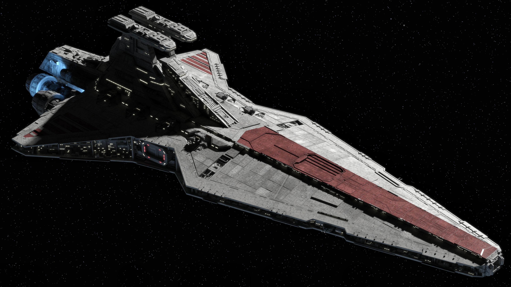
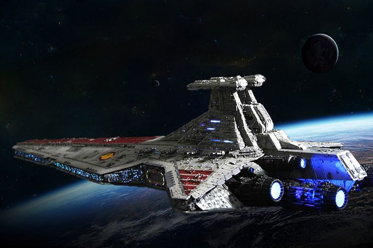

El Destructor Estelar clase Venator , también conocido como crucero de ataque de la República o Crucero Jedi , era una línea de naves capitales en forma de cuña utilizadas por la República Galáctica durante las Guerras Clon. La columna vertebral de la Armada de la República , el Venator era una nave capital versátil capaz de desempeñar los roles de un buque de guerra, capaz de combate de barco a barco, así como el papel de un portaaviones con su impresionante complemento de cazas estelares contra las fuerzas de la Confederación de Sistemas Independientes, en algunas de las batallas más conocidas de las Guerras Clon, incluidas las de Sullust , Christophsis y Coruscant
Durante el período inicial de las Guerras Clon , el Destructor Estelar clase Venator presentaba una amplia gama de espacio de hangar . La sección delantera del Destructor Estelar presentaba un pasaje en el medio, con bahías para naves espaciales a cada lado. Se accede principalmente a través de grandes puertas en la parte superior de la nave.

Los Destructores Estelares clase Venator presentaban dos puentes , con el puente de estribor como el centro de comando principal de la nave y el puente del puerto dedicado a las operaciones de los cazas estelares.
Estos puentes se levantaron desde el cuerpo principal del destructor y proporcionaron una vista panorámica amplia de la batalla. Sin embargo, la naturaleza expuesta de los puentes los hizo vulnerables a los ataques.
Hacia el final de la Guerra de los Clones los Venator fueron reemplazados por los nuevos Destructores Estelares clase Imperial de 1600 mts. de longitud, artillería superior y diseño amenazante.
=Star Wars: Venator Class Star Destroyer | EXTENDED BREAKDOWN